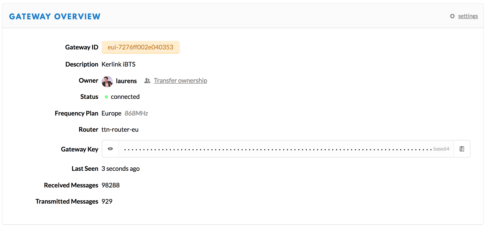

KerOS installation and configuration
Outdated: this section documents The Things Network V2, which is no longer maintained. See the documentation for The Things Stack V3, or browse the V2 docs index.
The Kerlink Wirnet product family share the same firmware and software architecture (for Wirnet iBTS, Wirnet iFemtoCell, Wirnet iFemtoCell-Evolution, Wirnet iStation).
This page describes how to install and configure any of these gateways.
1. Update the firmware #
Check the firmware version using the command:
cat /tmp/sys_startup_status.json
The response should look something like:
{
"cpu": {
...
},
"serial_number": "0x2e040353",
"start_time": "15:19:04 2018-07-09",
"sw_version": "4.1.6_20190829151113"
Update with the last firmware version: #
To update the gateway firmware with the last Wirnet KerOS firmware, go to Kerlink’s Resources page. The firmware can be updated via a USB key or over the Network.
You can also use the file Liveburner IPK for updating this Kerlink firmware, to perform a factory reset. This will however erase the whole partition and resets the default password.
Option 1: Software update over USB
- Find an empty USB key (FAT-32 formatted) and add the 3 files:
usb.autorunusbkey.txtkeros_x.y.z.ipkorliveburner_x.y.z.ipk
-
Plug the USB key in the gateway, the firmware is automatically installed. Unplug the USB key when the yellow debug led starts blinking fast.
-
Reboot the gateway.
-
Check if the firmware is properly updated via the command
cat /tmp/sys_startup_status.json, you can see the version after the linesw_version.
Option 2: Software update over Network
This example uses a package meant to upgrade the firmware, however the steps are the same for any other package.
- Create the directory
.updatesunder/user(if it doesn’t already exist):
mkdir -p /user/.updates
- Transfer the KerOS package corresponding to the new firmware in this directory (replace with
liveburner_x.y.zfor a factory reset):
scp keros_4.1.6.ipk root@<ip_address>:/user/.updates/
- Ensure file is correctly written:
sync
- Trigger Update for next reboot:
kerosd -u
- Restart:
reboot
- Check the firmware version in the file
/tmp/sys_startup_status.jsonunder the fieldsw_version.
2. Connect to The Things Network #
To use the gateway, you need to install the packet forwarder.
-
Install Kerlink’s latest packet forwarder which can be found under Kerlink’s Resources section. The Kerlink packet forwarder is composed of the LoRa daemon (LoRa modem management) and the LoRa forwarder (connection to TTN), respectively called
loradandlorafwd. Download the pre-compiled.ipkversion of both files which look something like this:lorad_1.1.5-1_klkgw.ipkandlorafwd_1.1.1-2_klkgw.ipk. Install the packet forwarder over the network or USB and reboot the gateway. More info -
Configure the LoRa modem: edit the file
/etc/default/loradand select the appropriate file for your region. -
Configure the frequency plan: edit the file that you selected at step 2, and edit the frequencies according to your region.
-
Configure the LoRa forwarder: see the location of your configuration file from
/etc/default/lorafwd. Edit that file (for example/user/etc/lorafwd/lorafwd.toml), and scroll to the[ gwmp ]section (around line 81) and configure the server address and ports:[ gwmp ] # The internet host where the gateway should connect. The node can be either a # fully qualified domain name or an IP address (IPv4 or IPv6). # # Type: string # Example: "myhost.example.com" or "123.45.67.89" or "2001:db8::1234" # Default: "localhost" # node = "router.eu.thethings.network" # The GWMP services can be a service name (see services(5)) or an integer and, # in this case, refers to a network port. # The service where the gateway should push uplink messages. # # Type: string or integer # Example: "https" or 1234 # Default: 0 # service.uplink = 1700 # The service where the gateway should pull downlink messages. # # Type: string or integer # Example: "https" or 1234 # Default: 0 # service.downlink = 1700
- The gateway EUI can be found by using the command
grep EUI /tmp/board_info.json
Write down the gateway EUI, you’ll need it later for registering the gateway in the Developer Console.
- Check this link for the right
node. - The UDP ports
1700are used, both for outgoing and incoming traffic. You can set this UDP port in the linesservice.uplinkandservice.downlink. (In some cases, firewalls block these UDP ports. Please contact your network administrator if you’re in doubt). - Don’t forget to uncomment the
node,service.uplinkandservice.downlinklines, and ensure thenodevalue (server address) is between double quotes. - Restart the packet forwarder with
killall lorad lorafwd
- Register the gateway in the Developer Console. You can find more information on how to register your gateway in the Console here. If all went well, you should see something like this:
